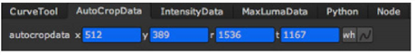

Open topic with navigation
Cropping Black Edges
You can crop black edges (or any color you choose) from your footage to eliminate unnecessary computation:
|
1.
|
Select Image > CurveTool to insert a CurveTool node after the image sequence you want to analyze. |
|
2.
|
Make sure a Viewer is connected to the CurveTool node. |
|
3.
|
In the CurveTool controls, select AutoCrop from the Curve Type dropdown menu. |
|
4.
|
Using the color parameters, select the color you want to track. |
|
5.
|
To control how far the color can deviate from the selected color and still be cropped off, use the Intensity Range slider. |
|
6.
|
From the channels dropdown menu and checkboxes, select the channels you want to analyze. |
|
7.
|
If you want to analyze an area in the frames rather than entire frames, define a region of interest either by dragging the edges of the frames to a new position in the Viewer, or by defining the area using parameters labeled ROI. |
|
8.
|
Click Go! to analyze the frames. This opens the Frames to Execute dialog. |
|
9.
|
In the dialog, define the frames to analyze. Enter the first frame, followed by a comma and the last frame. Click OK. Nuke starts analyzing the frame sequence. |
|
10.
|
You’ll find the results of the analysis on the AutoCropData tab where the parameter values have turned blue to indicate they are animated over time. To see the animation curve, right-click on a parameter field and select Curve editor. |

Once Nuke has created the animation curve, you can copy the animation or any of its values into a Crop node, for example, to match the analyzed crop area there. Ctrl/Cmd+click on the animation button and drag and drop it to another parameter to create an expression linking the two.